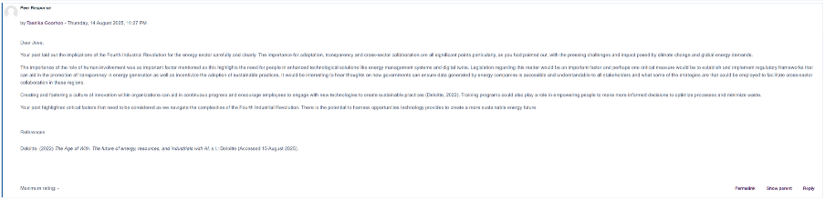
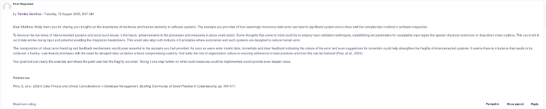
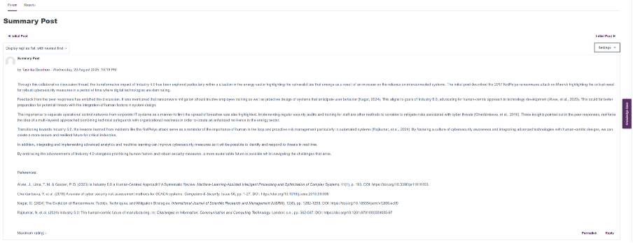

Module notes
Unit 1 Notes:
Outcomes:
1) The past, present and future of machine learning.
2) The challenges and opportunities of using algorithms.
3) Interplay among big data analytics, machine learning and artificial intelligence.
The lecture cast Introduction to Machine Learning was insightful and provided a good introduction to the module and topic. This unit also allowed for meeting fellow students and the tutor. Here it was conveyed that there would be a group project, and we would be assigned groups. I completed the Collaborative Discussion: The 4th Industrial Revolution. This was the initial post and required discussing the impact of industry 4.0 and 5.0 on any particular sector. I chose the Energy sector and discussed the cyber attack in 2017 on the oil and gas company Maersk; this was part of the NotPetya ransomware attack. Here is the post: https://www.my-course.co.uk/mod/forum/discuss.php?d=312503
Unit 2 Notes:
Outcomes:
1) Undertake basic EDA.
2) Understand the dataset.
3) Prepare the dataset for machine learning.
This unit allowed for me to engage with exploratory data analysis and preparation of the dataset for machine learning. I provided peer response posts for Collaborative Discussion 1:
https://www.my-course.co.uk/mod/forum/discuss.php?d=314624#p616793

https://www.my-course.co.uk/mod/forum/discuss.php?d=311540

Unit 3 Notes:
Outcomes:
1) Gain theoretical understanding of correlation and regression.
2) Understand how to compute correlation and regression.
3) Be able to apply these statistical techniques in real world scenario.
The lecture cast in this unit explored the topic Correlation and Regression and how to compute it. In this unit, the final summary post for Collaborative Discussion 1 was completed:
https://www.my-course.co.uk/mod/forum/discuss.php?d=316649

Unit 4 Notes:
Outcomes:
1) Undertake regression modelling with complex dataset.
2) Evaluate the results to optimise the model.
3) Know about more about the scikit-learn library of Python.
This unit, I worked through the reading and the group project. Communication was through WhatsApp and regular team meetings.
Unit 5 Notes:
Outcomes:
1) Understand the logic which underpins clustering.
2) Identify skill sets required to evaluate the results of cluster analysis.
3) Understand the pitfalls of clustering techniques.
This unit I worked through the lecturecast on Clustering. This provided some insight into the process of working through results of cluster analysis as well as better understanding disadvantages of the technique. I also worked through the Jaccard coefficient calculations exercises which can be found in the module artefacts section.
Unit 6 Notes:
Outcomes:
1) Undertake clustering analysis on large datasets.
2) Use right Python libraries for clustering.
3) Evaluate and interpret the results.
This unit the first assignment was due which was the group project. This was submitted in time along with the peer review provided a chance to reflect on the team work aspect of the submission. It was a smooth submission, and the group worked relatively well. This unit also has a seminar on K-means clustering tutorial.
Unit 7 Notes:
Outcomes:
1) Gain a critical and detailed understanding of the ANN.
2) Design and develop simple ANN artefacts.
3) Critique and contextualise emerging research in ANN.
This unit had the lecturecast on Artificial Neural Network which was informative and provided a good understanding along with the reading material.
Unit 8 Notes:
Outcomes:
1) Understand the error handling mechanism of ANN.
2) Design and develop more ANN artefacts.
3) Critique and contextualise emerging research in the area of ANN.
This unit provided an understanding on backpropagation in Artificial Neural Networks (ANNs). The activity on gradient cost function was in this unit. The initial post on the second Collaborative Discussion: Legal and ethical views on ANN applications: https://www.my-course.co.uk/mod/forum/discuss.php?d=323083
Unit 9 Notes:
Outcomes:
1) Understand the application and importance of computer vision.
2) Undertake basic computer vision related tasks.
This unit covered Convolutional Neural Networks through a lecturecast which helped provide insight on application and importance. The unit include providing peer responses as part of the collaborative discussion:
https://www.my-course.co.uk/mod/forum/discuss.php?d=323129
https://www.my-course.co.uk/mod/forum/discuss.php?d=323038
Unit 10 Notes:
Outcomes:
1) Understand the core advancements in NLP and how they are transforming industries.
2) Apply modern NLP models using Transformer architectures.
3) Evaluate NLP models using domain-specific metrics.
4) Critically assess and improve NLP models using hyperparameter tuning and transfer learning.
This unit allowed for further reading on CNN explainer. Along with the summary post on the collaborative discussion: https://www.my-course.co.uk/mod/forum/discuss.php?d=326284
Unit 11 Notes:
Outcomes:
1) Understand the importance of model selection, evaluation, and optimisation.
2) Undertake hyperparameter tuning to enhance model performance.
3) Apply appropriate evaluation metrics for different ML tasks.
4) Explore MLOps principles for continuous model improvement and monitoring.
This unit explored model selection and evaluation. This was through a lecturecast and readings. This unit also had the second assignment due – Individual presentation.
Unit 12 Notes:
Outcomes:
1) Understand the challenges and opportunities of industry 4.0 revolution.
2) Appreciate the impact of machine learning in future societies.
The last unit took a look at Industry 4.0 and Machine Learning. The e-Portfolio was the last assignment due along with a reflection piece, which can be found in the reflection piece section.